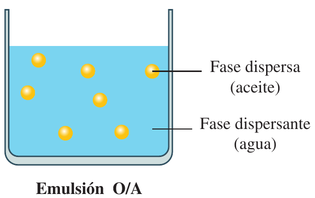
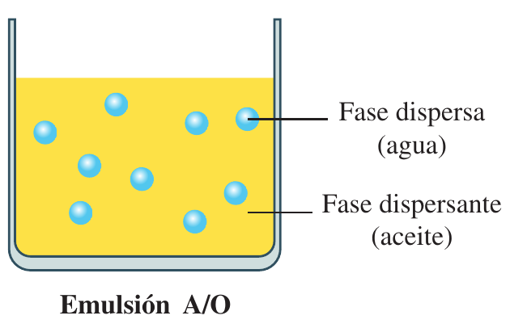

Dentro de los sistemas dispersos coloidales o dispersiones coloidales (o simplemente coloides), las emulsiones quizás sean los tipos de mezclas más usados en la fabricación de cosméticos.
Esto es porque la emulsión va a permitir realizar mezclas de sustancias liposolubles (lopófilas) con sustancias hidrosolubles (hidrofilas), y viceversa, obteniendo así distintos tipos de emulsiones cuyo pH vamos a poder aproximar bastante al pH de la emulsión epicutánea de la piel (que como sabemos se mueve en valores de pH entre 5 y 6, aproximadamente).
¿Será lo mismo añadir sustancias liposolubles a sustancias hidrosolubles, que añadir sustancias hidrosolubles a sustancias liposolubles? Evidentemente, la respuesta es que NO.
Si añadimos sustancias liposolubles a sustancias hidrosolubles, estamos realizando una mezcla donde la fase dispersa está formada por sustancias liposolubles y la fase dispersante la constituyen sustancias hidrosolubles.
Si, por el contrario, añadimos sustancias hidrosolubles a sustancias liposolubles, en este caso estamos realizando una mezcla donde la fase dispersa está formada por sustancias hidrosolubles y la fase dispersante la constituyen sustancias liposolubles.
Como hemos podido comprobar, tenemos dos posibilidades de mezclar:
- Mezclar una sustancia o mezcla de sustancias liposolubles (fase dispersa) con una sustancias o mezcla de sustancias hidrosolubles (fase dispersante o dispersora). De esta forma, las partículas de la fase dispersa (sustancia o sustancias liposolubles) se reparten entre las partículas de la fase dispersante (sustancia o sustancias hidrosolubles).
A este tipo de emulsiones las llamamos O/A. La letra "O" indica que se trata de una sustancia o una mezcla de sustancias liposolubles (Oleosas), y la letra "A" indica que se trata de una sustancia o mezcla de sustancias hidrosolubles (Acuosas). También podemos encontrar la denominación de emulsión O/W. Es lo mismo, lo único que W es la inicial de agua en inglés, Water.
 - Mezclar una sustancia o mezcla de sustancias hidrosolubles (fase dispersa) con una sustancias o mezcla de sustancias liposolubles (fase dispersante o dispersora). De esta forma, las partículas de la fase dispersa (sustancia o sustancias hidrosolubles) se reparten entre las partículas de la fase dispersante (sustancia o sustancias liposolubles).
A este tipo de emulsiones las llamamos A/O. La letra "A" indica que se trata de una sustancia o una mezcla de sustancias hidrosolubles (Acuosas), y la letra "O" indica que se trata de una sustancia o mezcla de sustancias hidrosolubles (Oleosas). También podemos encontrar la denominación de emulsión W/O. Es lo mismo, lo único que W es la inicial de agua en inglés, Water.

Cabe hacernos la siguiente pregunta, ¿si mezclo sustancias oleosas con sustancias acuosas (o sustancias acuosas con sustancias oleosas) cómo es posible que dicha mezcla sea estable? Evidentemente no lo es por sí misma.
Un ejemplo cotidiano lo tenemos cuando mezclamos agua con aceite y agitamos la mezcla; basta dejarla reposar unos segundos para comprobar cómo las fases se separan, quedando la fase oleosa en la superficie y la fase acuosa en el fondo.
Para estabilizar las emulsiones, además de agitar intensamente podemos:
- Añadir sustancias viscosizantes, aumentando así la viscosidad de la mezcla. Esto dificulta la separación de las fases que forman la emulsión.
- Añadir sustancias emulgentes (también denominadas emulsionantes, emulsificantes, tensioactivos o tensoactivos), que tienen como función unir las dos fases de la emulsión.
¿Cómo puede entonces un emulgente unir ambas fases?
Porque se trata de una sustancia que tiene dos partes, una hidrófila (que se puede unir a la parte de una mezcla constituida por sustancias acuosas) y la otra lipófila (que se puede unir a la parte de una mezcla constituida por sustancias oleosas).
Lo vemos a continuación: emulgentes (también llamados emulsionantes, emulsificantes, tensioactivos o tensoactivos).
Un viscosizante es una sustancia que aumenta la viscosidad de un producto sin alterar significativamente su composición química.
Se usa para espesar, estabilizar y mejorar la textura de formulaciones líquidas o semilíquidas.